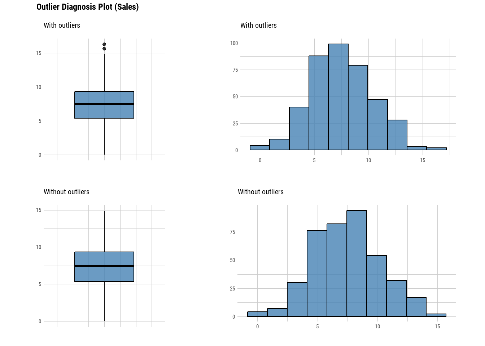

# Data with missing data
data("airquality")8 Data exploration
“Data is like garbage. You’d better know what you are going to do with it before you collect it.”
– Mark Twain
Data exploration, as the name suggests involves the process of exploring the data to understand its structures, identifying underlying patterns, and discovering its characteristics. This process is the first stage in analysing the data and gaining insight from it. Doing data analysis without data exploration is akin to going to war without a proper strategy.
R provides numerous functions and packages that can help to explore the data efficiently and systematically. Thus, this chapter intends to introduce those functions and packages to readers adequately and further equip the readers to do any data analysis.
8.1 Missing data
Missing data are recognised as NA in R. Let’s use airquality data, a built-in dataset in R to see how R recognised missing values.
By using summary(), we can see that the first two columns have missing values, recognised as NA.
summary(airquality) Ozone Solar.R Wind Temp
Min. : 1.00 Min. : 7.0 Min. : 1.700 Min. :56.00
1st Qu.: 18.00 1st Qu.:115.8 1st Qu.: 7.400 1st Qu.:72.00
Median : 31.50 Median :205.0 Median : 9.700 Median :79.00
Mean : 42.13 Mean :185.9 Mean : 9.958 Mean :77.88
3rd Qu.: 63.25 3rd Qu.:258.8 3rd Qu.:11.500 3rd Qu.:85.00
Max. :168.00 Max. :334.0 Max. :20.700 Max. :97.00
NA's :37 NA's :7
Month Day
Min. :5.000 Min. : 1.0
1st Qu.:6.000 1st Qu.: 8.0
Median :7.000 Median :16.0
Mean :6.993 Mean :15.8
3rd Qu.:8.000 3rd Qu.:23.0
Max. :9.000 Max. :31.0
Another function to give a quick answer to whether we have available data or not is anyNA().
anyNA(airquality)[1] TRUETo get the count of missing values, we can use is.na():
is.na(airquality) |> table()
FALSE TRUE
874 44 TRUE is 44, which means that we have 44 missing values across individual cells in our dataset. To drop the missing values, we can use complete.cases():
# Make an index
na_index <- complete.cases(airquality)
# Apply the index to drop the NA's
airquality_noNA <- airquality[na_index, ]Alternatively, it is easier to use na.omit():
airquality_noNA2 <- na.omit(airquality)Both, complete.cases() and na.omit() return an identical output.
# Drop NA's using complete.cases()
dim(airquality_noNA)[1] 111 6# Drop NA's using na.omit()
dim(airquality_noNA2)[1] 111 6We may want to explore the data with missing values. Thus, we can use complete.cases() plus ! in our codes to isolate the data with missing values.
# Make an index
na_index <- complete.cases(airquality)
# Apply the index to drop the NA's
airquality_NA_only <- airquality[!na_index, ]
# Data with missing values
dim(airquality_NA_only)[1] 42 6Notice that the airquality_NA_only returns 44 rows of data with missing values, while using is.na() earlier we get 44 missing values. airquality_NA_only returns rows of data with missing values. The missing values may exist in more than a single column in the dataset. The is.na() function counts all the missing values regardless of the position.
8.2 Outliers
An outlier is a data point that lies significantly outside the range of most other observations in a dataset. It is an extreme value, either unusually high or low, that differs markedly from other data points. Outliers can occur due to variability in the data, errors in measurement, or experimental anomalies.
Since outliers may not be representative of the data and may distort statistical measures such as mean and standard deviation, it is important to identify them early during the data exploration stage.
There are two methods to identify outliers:
Interquartile range (IQR) method:
The IQR method identifies outliers as data points lying below Q1 − 1.5 × IQR or above Q3 + 1.5 × IQR , where Q1 and Q3 are the first and third quartiles, respectively. This is the method that applies in the boxplot.
Let’s use
airquality_noNAdata to demonstrate:out_bp <- boxplot(airquality_noNA$Wind, main = "Outliers in the wind column")To access the values of the outliers:
out_bp$out[1] 20.1 18.4 20.7To see the rows with the outliers:
airquality_noNA |> dplyr::filter(Wind == c(20.1, 18.4, 20.7))Ozone Solar.R Wind Temp Month Day 1 8 19 20.1 61 5 9 2 6 78 18.4 57 5 18 3 37 284 20.7 72 6 17Z-score method:
This method standardizes data and identifies outliers as those with a z-score greater than a threshold (commonly 3 or -3). The z-score (also called a standard score) is a statistical measure that indicates how many standard deviations a data point is from the mean of the dataset.
Basically, the z-score is a distribution which reflects our dataset and it shows how far each value is from the average. So, in this context, outliers are the values that are significantly far from the average.
Now, let’s focus on understanding how we can detect the outliers using this method.
# Create z-score for the data z_scores <- scale(airquality_noNA$Wind) # How many outliers table(abs(z_scores) > 3)FALSE TRUE 110 1TRUEis 1, which means that we have a single outlier in our data. Let’s see which value is the outlier.airquality_noNA$Wind[abs(z_scores) > 3][1] 20.7To see the row with the outlier:
airquality_noNA |> dplyr::filter(Wind == 20.7)Ozone Solar.R Wind Temp Month Day 1 37 284 20.7 72 6 17
There are other advanced methods to detect outliers. However, the basics to understand those methods are beyond the scope of this book.
8.3 Useful packages
In this section, we going to see several useful R packages to explore the data. We are only going to cover the main functions of each package.
8.3.1 skimr
The skimr package provides various helpful functions to do data exploration. Firstly, we need to install skimr, and then load the packages. We going to use the dplyr package together with the skimr package.
# Install the package
install.packages("skimr")
# Load the necessary packages
library(skimr)
library(dplyr)To explore the whole dataset, we can use skim.
# Let's use the iris dataset
data("iris")
# Use skim
skim(iris)| Name | iris |
| Number of rows | 150 |
| Number of columns | 5 |
| _______________________ | |
| Column type frequency: | |
| factor | 1 |
| numeric | 4 |
| ________________________ | |
| Group variables | None |
Variable type: factor
| skim_variable | n_missing | complete_rate | ordered | n_unique | top_counts |
|---|---|---|---|---|---|
| Species | 0 | 1 | FALSE | 3 | set: 50, ver: 50, vir: 50 |
Variable type: numeric
| skim_variable | n_missing | complete_rate | mean | sd | p0 | p25 | p50 | p75 | p100 | hist |
|---|---|---|---|---|---|---|---|---|---|---|
| Sepal.Length | 0 | 1 | 5.84 | 0.83 | 4.3 | 5.1 | 5.80 | 6.4 | 7.9 | ▆▇▇▅▂ |
| Sepal.Width | 0 | 1 | 3.06 | 0.44 | 2.0 | 2.8 | 3.00 | 3.3 | 4.4 | ▁▆▇▂▁ |
| Petal.Length | 0 | 1 | 3.76 | 1.77 | 1.0 | 1.6 | 4.35 | 5.1 | 6.9 | ▇▁▆▇▂ |
| Petal.Width | 0 | 1 | 1.20 | 0.76 | 0.1 | 0.3 | 1.30 | 1.8 | 2.5 | ▇▁▇▅▃ |
The skim function will return the basic statistics for our data including the information on the missing values (n_missing and complete_rate) and a histogram for the numerical variables. Additionally, we can get the basic statistics based on a certain group. For example, here we use group_by(), then, we apply skim().
iris %>%
group_by(Species) %>%
skim()| Name | Piped data |
| Number of rows | 150 |
| Number of columns | 5 |
| _______________________ | |
| Column type frequency: | |
| numeric | 4 |
| ________________________ | |
| Group variables | Species |
Variable type: numeric
| skim_variable | Species | n_missing | complete_rate | mean | sd | p0 | p25 | p50 | p75 | p100 | hist |
|---|---|---|---|---|---|---|---|---|---|---|---|
| Sepal.Length | setosa | 0 | 1 | 5.01 | 0.35 | 4.3 | 4.80 | 5.00 | 5.20 | 5.8 | ▃▃▇▅▁ |
| Sepal.Length | versicolor | 0 | 1 | 5.94 | 0.52 | 4.9 | 5.60 | 5.90 | 6.30 | 7.0 | ▂▇▆▃▃ |
| Sepal.Length | virginica | 0 | 1 | 6.59 | 0.64 | 4.9 | 6.23 | 6.50 | 6.90 | 7.9 | ▁▃▇▃▂ |
| Sepal.Width | setosa | 0 | 1 | 3.43 | 0.38 | 2.3 | 3.20 | 3.40 | 3.68 | 4.4 | ▁▃▇▅▂ |
| Sepal.Width | versicolor | 0 | 1 | 2.77 | 0.31 | 2.0 | 2.52 | 2.80 | 3.00 | 3.4 | ▁▅▆▇▂ |
| Sepal.Width | virginica | 0 | 1 | 2.97 | 0.32 | 2.2 | 2.80 | 3.00 | 3.18 | 3.8 | ▂▆▇▅▁ |
| Petal.Length | setosa | 0 | 1 | 1.46 | 0.17 | 1.0 | 1.40 | 1.50 | 1.58 | 1.9 | ▁▃▇▃▁ |
| Petal.Length | versicolor | 0 | 1 | 4.26 | 0.47 | 3.0 | 4.00 | 4.35 | 4.60 | 5.1 | ▂▂▇▇▆ |
| Petal.Length | virginica | 0 | 1 | 5.55 | 0.55 | 4.5 | 5.10 | 5.55 | 5.88 | 6.9 | ▃▇▇▃▂ |
| Petal.Width | setosa | 0 | 1 | 0.25 | 0.11 | 0.1 | 0.20 | 0.20 | 0.30 | 0.6 | ▇▂▂▁▁ |
| Petal.Width | versicolor | 0 | 1 | 1.33 | 0.20 | 1.0 | 1.20 | 1.30 | 1.50 | 1.8 | ▅▇▃▆▁ |
| Petal.Width | virginica | 0 | 1 | 2.03 | 0.27 | 1.4 | 1.80 | 2.00 | 2.30 | 2.5 | ▂▇▆▅▇ |
Readers interested in learning more about the skimr package can explore its comprehensive documentation for more details and examples.
8.3.2 naniar
naniar package provides tidy ways to summarise, visualise, and manipulate missing data. First, let’s install and load the necessary packages.
# Install the package
install.packages("naniar")
# Load the necessary packages
library(naniar)
library(dplyr)Let’s use the oceanbuoys data, a dataset from the naniar package. First, let’s summarise the missing data according to a variable. Further detail on the dataset can be found by running ?oceanbuoys in the Console.
# Load the data
data("oceanbuoys")
# Missing values summary based on variables
miss_var_summary(oceanbuoys)# A tibble: 8 × 3
variable n_miss pct_miss
<chr> <int> <num>
1 humidity 93 12.6
2 air_temp_c 81 11.0
3 sea_temp_c 3 0.408
4 year 0 0
5 latitude 0 0
6 longitude 0 0
7 wind_ew 0 0
8 wind_ns 0 0 n_miss is the number of missing values and pct_miss is the percentage of missing values. We can further group the missing values according to a certain variable.
oceanbuoys %>%
group_by(year) %>%
miss_var_summary()# A tibble: 14 × 4
# Groups: year [2]
year variable n_miss pct_miss
<dbl> <chr> <int> <num>
1 1997 air_temp_c 77 20.9
2 1997 latitude 0 0
3 1997 longitude 0 0
4 1997 sea_temp_c 0 0
5 1997 humidity 0 0
6 1997 wind_ew 0 0
7 1997 wind_ns 0 0
8 1993 humidity 93 25.3
9 1993 air_temp_c 4 1.09
10 1993 sea_temp_c 3 0.815
11 1993 latitude 0 0
12 1993 longitude 0 0
13 1993 wind_ew 0 0
14 1993 wind_ns 0 0 naniar also provides a visual summary for missing values.
gg_miss_var(oceanbuoys)We can further group by a variable using the facet argument.
gg_miss_var(oceanbuoys, facet = year)The content we just covered provides only a glimpse of the powerful features and capabilities of the naniar package. For a deeper understanding and comprehensive insights, readers are encouraged to explore the naniar documentation website.
8.3.3 DataExplorer
DataExplorer provides various helpful functions for data exploration. First, let’s install and load the necessary packages.
# Install package
install.packages("DataExplorer")
# Load the necessary packages
library(DataExplorer)
library(dplyr)Let’s use oceanbuoys data from the naniar package previously.
# Load the data
data("oceanbuoys", package = "naniar")DataExplorer provides a general function to explore the data.
plot_intro(oceanbuoys)From the plot, we understand that our data consists of all continuous (numeric) columns and no discrete (categorical) columns. No missing columns but we have 3% missing observations.
To investigate the missing observations, we can use plot_missing():
plot_missing(oceanbuoys)Alternatively, we can get a summary instead of a plot.
profile_missing(oceanbuoys)# A tibble: 8 × 3
feature num_missing pct_missing
<fct> <int> <dbl>
1 year 0 0
2 latitude 0 0
3 longitude 0 0
4 sea_temp_c 3 0.00408
5 air_temp_c 81 0.110
6 humidity 93 0.126
7 wind_ew 0 0
8 wind_ns 0 0 Additionally, DataExplorer provides a function to plot a correlation matrix. Correlation is a measure of association between two numerical variables. It ranges between -1 and 1. Values close to 1 indicate a high positive correlation between the two variables, while values close to -1 indicate a high negative correlation between the two numerical variables. Values close to 0 indicate a low correlation between the two values.
oceanbuoys %>%
na.omit() %>%
plot_correlation()To do a correlation or in this case correlation plot, the variables should be numerical and have no missing values (hence, the use of na.omit() in the code). If for example, we want to apply this function to the iris dataset, in which we know that one of the variables is categorical, we need to exclude the variable first.
iris %>%
select(-Species) %>%
plot_correlation()
Alternatively, the more efficient code to exclude the non-numerical variable is using the select_if().
iris %>%
select_if(is.numeric) %>%
plot_correlation()DataExplorer provides more useful functions, which can not be extensively covered in this section. Interested readers can further study its documentation for more.
8.3.4 VIM
The VIM package contains tools for the visualisation of missing and/or imputed values. Imputation of the missing values is beyond the scope of this book. However, we going to see how functions from the VIM package can be utilised to explore the pattern of missingness.
First, make sure to install the VIM package and load the necessary packages.
# Install package
install.packages("VIM")
# Load the necessary packages
library(VIM)
library(dplyr)Let’s use oceanbuoys data from the naniar package previously.
# Load the data
data("oceanbuoys", package = "naniar")The aggr() function will plot our data and visualise the pattern of missing values. numbers = TRUE and prop = FALSE to make sure the number missing values in a number not a proportion.
aggr(oceanbuoys, numbers = TRUE, prop = FALSE)The red colour represents the missing values, and the blue colour represents the observed values. The first plot on the left presents the proportion of missing values according to variables. The second plot on the right presents the combination of missing values. Notice that if we have too many variables, the variable names will not be fully displayed. For example in the second plot, for a combination of sea_temp_c, air_temp_c, and humidity, we have 2 values missing.
The aggr() function is suitable to be utilised when we have a small to intermediate number of variables. For data with a large number of variables, matrixplot() may be more appropriate.
matrixplot(oceanbuoys)matrixplot() scales the data into 0 (white) and 1 (black). The higher values will become close to 1, and the lower values will become close to 0. The red colour represents the missing values.
The VIM package contains more useful functions, however, the majority of them are for exploring the imputation methods and values. Interested readers can further study its documentation for more details.
8.3.5 dlookr
The dlookr package provides various helpful functions especially related to outliers. First, we need to install the dlookr package and load the necessary packages.
# Install package
install.packages("dlookr")
# Load the packages
library(dlookr)
library(dplyr)Let’s use the Carseats dataset, a dataset from dlookr package. The diagnose_numeric() function from the dlookr package is particularly useful for diagnosing numeric variables.
# Load the data
data("Carseats")
# Diagnose function
diagnose_numeric(Carseats) variables min Q1 mean median Q3 max zero minus outlier
1 Sales 0 5.39 7.496325 7.49 9.32 16.27 1 0 2
2 CompPrice 77 115.00 124.975000 125.00 135.00 175.00 0 0 2
3 Income 21 42.75 68.657500 69.00 91.00 120.00 0 0 0
4 Advertising 0 0.00 6.635000 5.00 12.00 29.00 144 0 0
5 Population 10 139.00 264.840000 272.00 398.50 509.00 0 0 0
6 Price 24 100.00 115.795000 117.00 131.00 191.00 0 0 5
7 Age 25 39.75 53.322500 54.50 66.00 80.00 0 0 0
8 Education 10 12.00 13.900000 14.00 16.00 18.00 0 0 0Among its results, it provides the following insights:
zero: the number of zero values in the data.minus: the count of negative values.outlier: the number of potential outliers detected in the dataset.
Additionally, we have diagnose_category() which summarises categorical variables. This function returns several outputs:
levels: level for each categorical variable.N: number of observations.freq: number of observations at the levels.ratio: percentage of observations at the levelsrank: rank of occupancy ratio of levels
diagnose_category(Carseats) variables levels N freq ratio rank
1 ShelveLoc Medium 400 219 54.75 1
2 ShelveLoc Bad 400 96 24.00 2
3 ShelveLoc Good 400 85 21.25 3
4 Urban Yes 400 282 70.50 1
5 Urban No 400 118 29.50 2
6 US Yes 400 258 64.50 1
7 US No 400 142 35.50 2We can further explore the outliers identified by diagnose_numeric() using diagnose_outlier().
diagnose_outlier(Carseats) variables outliers_cnt outliers_ratio outliers_mean with_mean without_mean
1 Sales 2 0.50 15.95 7.496325 7.453844
2 CompPrice 2 0.50 126.00 124.975000 124.969849
3 Income 0 0.00 NaN 68.657500 68.657500
4 Advertising 0 0.00 NaN 6.635000 6.635000
5 Population 0 0.00 NaN 264.840000 264.840000
6 Price 5 1.25 100.40 115.795000 115.989873
7 Age 0 0.00 NaN 53.322500 53.322500
8 Education 0 0.00 NaN 13.900000 13.900000This function returns:
outliers_cnt: number of outliers.outliers_ratio: percent of outliers.outliers_mean: mean of outliers.with_mean: mean of values with outliers.without_mean: mean of values of without outliers.
In fact, we can further simplify the result using the filter() from the dplyr package.
diagnose_outlier(Carseats) %>%
filter(outliers_cnt > 0) variables outliers_cnt outliers_ratio outliers_mean with_mean without_mean
1 Sales 2 0.50 15.95 7.496325 7.453844
2 CompPrice 2 0.50 126.00 124.975000 124.969849
3 Price 5 1.25 100.40 115.795000 115.989873Furthermore, dlookr provides another useful function to visualise the outliers. However, for this example, we going to select a single variable.
Carseats %>%
select(Sales) %>%
plot_outlier()
This function returns a boxplot and histogram for values with and without outliers. Thus, we can see how much the outliers in the variables change the distribution of the data. dlookr actually provides more functions than the ones we covered in this section. Readers are suggested to go through its documentation to further learn this package.
8.4 Chapter summary
In this chapter, we have covered how missing data and outliers were identified in R using base R functions. Moreover, we have covered several useful functions from five R packages:
- skimr
- naniar
- DataExplorer
- VIM
- dlookr
skimr provides general functions for data exploration (Waring et al. 2024). naniar, DataExplorer, and VIM provide additional functions to explore and investigate missing data (Tierney and Cook 2023; Cui 2024; Kowarik and Templ 2016). Lastly, dlookr provides more functions for investigating outliers in the dataset (Ryu 2024).
While this chapter highlights the capabilities of these five packages, it is important to note that R offers many additional packages that can further enhance your analysis. Readers are encouraged to explore beyond these tools to find packages best suited to their specific needs.
8.5 Revision
Why is data exploration considered a crucial first step in data analysis, and what are some R functions and packages that can help in this process?
Write an R code to check for missing values in each column of the
riskfactorsdataset, a dataset from thenaniarpackage. Then, count how manyNAvalues exist in total.# Load the data data("riskfactors", package = "naniar")Using the
riskfactorsdataset from question 2, write R code to remove all missing values in the dataset and determine how many rows are left.Besides dropping the missing values, what are the possible solutions to missing values?
What are the possible solutions for outliers?
What are the pros and cons of dropping:
- Missing values
- Outliers
Name three packages for data exploration besides the five packages covered in this chapter.